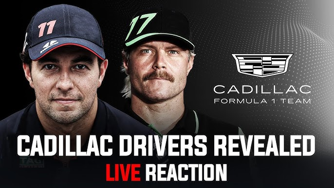

ข่าวใหญ่ ล่าสุด!
ปี 2026: Cadillac จะเข้าร่วมเป็นทีมใน F1 พร้อมกับการกลับมาของ Sergio Perez และ Valtteri Bottas
📰 ข่าวสารและอัปเดตล่าสุด
🚗 การเปลี่ยนแปลงทีม 2025
Lewis Hamilton: ย้ายจาก Mercedes → Ferrari (2025)
Carlos Sainz: ย้ายจาก Ferrari → Williams (2025)
Fernando Alonso: ต่อสัญญา Aston Martin
ข้อมูล: การย้ายทีมที่ใหญ่ที่สุดในประวัติศาสตร์ F1
🏎️ รุกกี้หน้าใหม่ปี 2025
Andrea Kimi Antonelli: Mercedes (อายุ 18 ปี)
Franco Colapinto: Alpine (จากอาร์เจนติน่า)
Isack Hadjar: RB (Red Bull Junior)
Gabriel Bortoleto: Sauber (จากบราซิล)
Oliver Bearman: Haas (เคยแทน Sainz)
⚙️ กฎระเบียบใหม่ 2026
Power Unit: เปลี่ยนเป็นระบบ Hybrid ใหม่
Fuel: ใช้ Sustainable Fuel 100%
Budget Cap: เพิ่มเป็น 140 ล้านดอลลาร์
ข้อมูล: การเปลี่ยนแปลงที่ใหญ่ที่สุดนับตั้งแต่ปี 2022
🌍 สนามแข่งใหม่
Madrid Grand Prix: เปิดตัวปี 2026
Las Vegas GP: กลับมาในปี 2025
Qatar GP: สนามถาวรใหม่
ข้อมูล: ปฏิทินการแข่งขันจะเพิ่มเป็น 25 สนาม
👤 ข้อมูลนักแข่ง
ดูสถิติ, คะแนนสะสม และทีมของนักแข่งแต่ละปี
รวม: 20+ นักแข่ง, แบ่งตามหมวดหมู่
ข้อมูล: แชมป์โลก, ชัยชนะ, โพเดียม
🏁 สนามแข่ง
แผนที่สนาม, ประเทศเจ้าภาพ และข้อมูลพื้นฐาน
รวม: 10+ สนามแข่งที่น่าสนใจ
ข้อมูล: ความยาว, สถิติรอบเร็ว, ผู้ชนะ
🚗 ข้อมูลรถแข่ง
รถแต่ละทีม รายละเอียดเครื่องยนต์ และการพัฒนา
รวม: 4 รถหลัก + ข้อมูลเทคนิค
ข้อมูล: ระบบ, กฎระเบียบ, สถิติ
📊 สถิติการแข่งขัน
เปรียบเทียบสถิติ 2020-2025: แชมป์, Pole Position, Fastest Lap
รวม: สถิติทีมและนักแข่ง
ข้อมูล: ชัยชนะ, โพเดียม, คะแนน
💡 ข้อมูลน่าสนใจเกี่ยวกับ F1
🔥 ความเร็วและพลัง
ความเร็วสูงสุด: มากกว่า 350 กม./ชม.
แรง G: มากกว่า 6G ในโค้ง
กำลังเครื่องยนต์: มากกว่า 1,000 แรงม้า
การเร่ง: 0-100 กม./ชม. ใน 2.5 วินาที
ข้อมูล: รถ F1 เร็วกว่าเครื่องบินที่กำลังขึ้น
💰 ต้นทุนและงบประมาณ
Budget Cap: 135 ล้านดอลลาร์ต่อปี
ค่าใช้จ่ายต่อทีม: มากกว่า 100 ล้านดอลลาร์
ค่าเครื่องยนต์: 15-20 ล้านดอลลาร์ต่อปี
ข้อมูล: F1 เป็นกีฬาที่แพงที่สุดในโลก
🌍 ระดับโลก
ผู้ชม: มากกว่า 500 ล้านคนต่อปี
ประเทศ: แข่งใน 20+ ประเทศ
ทีม: 10 ทีม, 20 นักแข่ง
ข้อมูล: F1 เป็นกีฬาที่มีผู้ชมมากที่สุดในโลก
⚡ เทคโนโลยี
Hybrid System: ใช้พลังงานไฟฟ้า 50%
Sustainable Fuel: จะใช้ 100% ในปี 2026
Carbon Neutral: เป้าหมายปี 2030
ข้อมูล: F1 เป็นผู้นำด้านเทคโนโลยีรถยนต์